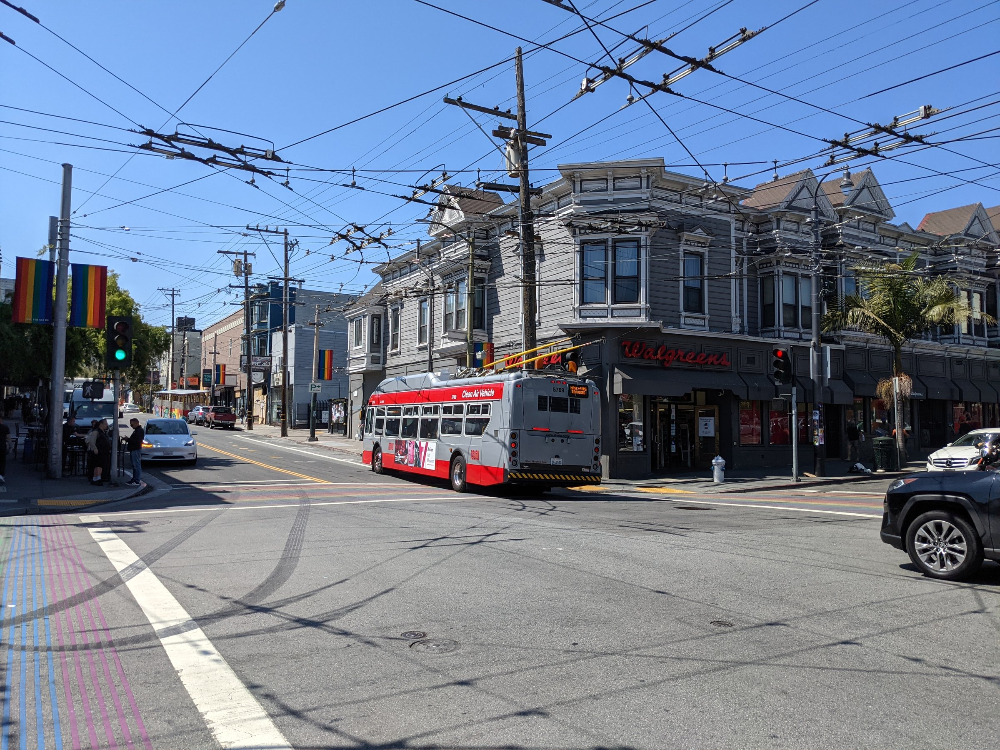
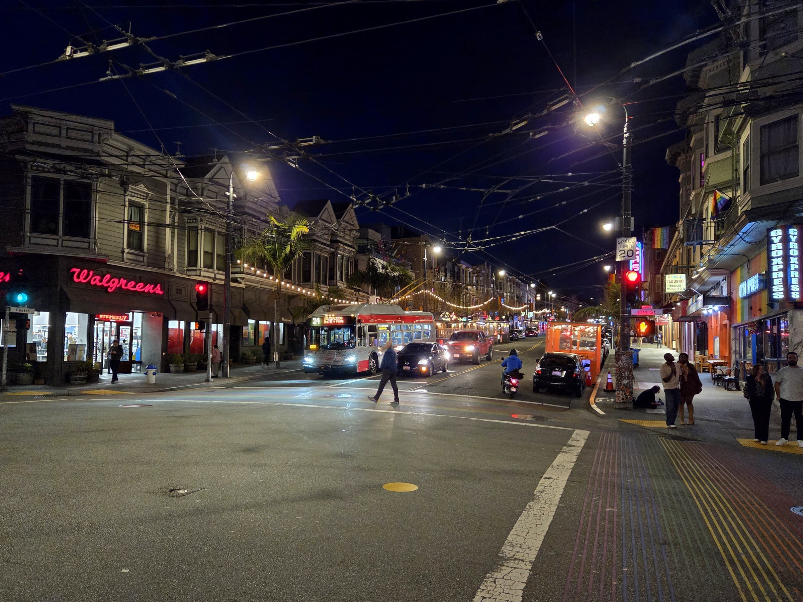

The natural world has different “parameters” that change


light
weather
distance
fog
rotation
Models fail for several reasons, here are two of them:
Castro and 18th St, San Francisco · Photos: Evan0512, Pi.1415926535, CC BY-SA 4.0, Wikimedia Commons · weather, distance, fog, rotation simulated on the day photo